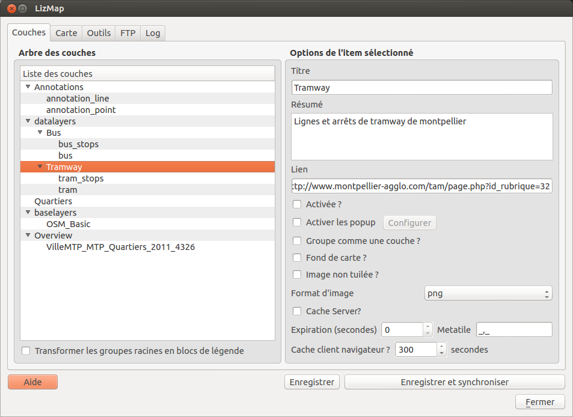

Cet onglet montre l’arbre des couches identique à celui présenté dans le panneau légende de QGIS. On peut sélectionner l’un des éléments de l’abre, une couche ou un groupe, puis configurer les options pour le groupe ou la couche sélectionnée.
Si votre projet contient des groupes de premier niveau, comme ici
-- groupe_a
|-- une couche
|-- un sous-groupe
|-- une autre couche
-- groupe_b
|-- une couche
etc.
Vous pouvez alors cocher cette option et alors :
Dans notre exemple, on obtiendrai alors la légende suivante dans la légende de Lizmap Web Client
[x] une couche
[x] un sous-groupe
[x] une autre couche
[x] une couche
etc.
le titre du groupe/de la couche.
une courte description du groupe/de la couche.
un lien html, comme par exemple “http://qgis.org” ou un document du répertoire media
une seule image est crée pour toute la largeur et la hauteur de la carte visible sur l’application Web.
3 formats
Nous conseillons vivement d’utiliser le format jpeg pour les fonds de carte, puisqu’ils la transparence est alors inutile
Lizmap Web Client sait créer dynamiquement un cache des tuiles sur le serveur, et permet aussi d’utiliser le cache du navigateur. Cela permet d’améliorer les performances de consultation. L’activation des caches se fait via le plugin, couche par couche.
A cocher pour activer le cache automatique pour la couche ou le groupe. Ce cache représente le stokage sur le serveur des images déjà générées par le serveur QGIS. L’application Lizmap Web Client génère automatiquement le cache au fur et à mesure que les tuiles sont demandées. Activer le cache permet d’alléger fortement la charge sur le serveur, puisqu’on ne redemande pas à QGIS les tuiles qui ont déjà été rendues.
2 options permettent de configurer le cache Serveur :
Dans QGIS, il est possible d’intégrer dans un projet des groupes ou des couches depuis un autre projet (qu’on appellera “parent”). Cette technique est intéressante, car elle permet de définir les propriétés des couches une seule fois dans un projet, par exemple pour les fonds de carte (Dans les projets “fils” qui intègrent ces couches, il n’est pas possible de modifier les propriétés)
Lizmap utilise cette fonctionnalité pour centraliser le cache des tuiles. Pour tous les projets fils qui utilisent des couches intégrées du projet parent, Lizmap demandera à QGIS Server les tuiles du projet parent, et non des projets fils. Le cache sera donc centralisé au niveau du projet parent, et tous les projets fils qui utilisent les couches bénéficieront du cache mis en commun.
Pour pouvoir utiliser cette fonctionnalité, il faut